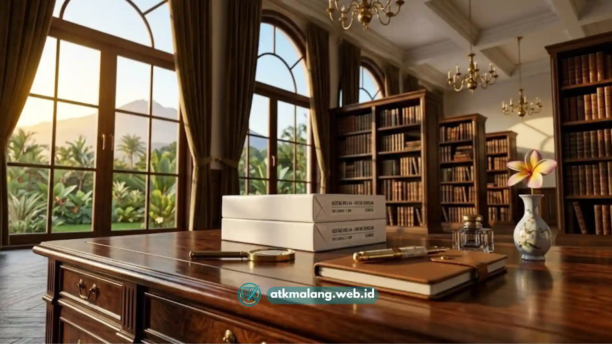

Supplier kertas HVS Malang untuk kebutuhan sekolah sebaiknya dipilih berdasarkan kelengkapan stok, konsistensi kualitas, dan kemampuan memenuhi pesanan rutin dalam jumlah besar sepanjang tahun ajaran.
- Sekolah memiliki kebutuhan kertas yang rutin, mulai dari ujian, tugas, hingga administrasi.
- Supplier yang lengkap biasanya menyediakan berbagai gramatur dan ukuran dalam satu tempat.
- Pembelian grosir membantu sekolah menekan biaya operasional ATK secara keseluruhan.
- Ketepatan waktu pengiriman menjadi faktor penting, terutama menjelang periode ujian.
- Kerja sama jangka panjang dengan satu supplier memudahkan proses pemesanan berulang.
Daftar Isi
Mengapa Sekolah Membutuhkan Supplier Kertas HVS Khusus?
Sekolah membutuhkan supplier kertas HVS khusus karena volume kebutuhan kertas yang tinggi dan berulang, mulai dari lembar soal ujian, materi ajar, hingga dokumen administrasi murid.
Berbeda dengan kebutuhan kantor pada umumnya, kebutuhan kertas di sekolah cenderung memiliki pola musiman yang cukup jelas, misalnya meningkat tajam menjelang ujian tengah semester, ujian akhir semester, atau ujian kelulusan.
Pada periode tersebut, kebutuhan kertas HVS bisa melonjak signifikan dibanding bulan-bulan biasa dan memerlukan manajemen Alat Tulis Kantor yang sigap.
Selain kebutuhan ujian, sekolah juga rutin mencetak modul pembelajaran, lembar kerja siswa, surat edaran untuk orang tua, hingga dokumen administrasi kepegawaian guru dan staf.
Semua kebutuhan ini membuat sekolah memerlukan pasokan kertas yang stabil dan terjamin ketersediaannya sepanjang tahun.
Apa Saja Kriteria Supplier Kertas HVS yang Cocok untuk Sekolah?
Supplier kertas HVS yang cocok untuk sekolah adalah supplier yang menyediakan stok lengkap berbagai gramatur dan ukuran, memiliki harga grosir yang kompetitif, serta dapat diandalkan dalam hal ketepatan waktu pengiriman.
Beberapa kriteria yang perlu diperhatikan saat memilih supplier Alat Tulis Kantor untuk kebutuhan sekolah:
- Kelengkapan varian produk: Supplier idealnya menyediakan berbagai gramatur (70 gsm, 80 gsm) dan ukuran (A4, F4) dalam satu tempat sehingga sekolah tidak perlu berpindah-pindah pemasok.
- Kapasitas stok yang memadai: Supplier dengan gudang yang cukup besar lebih mampu memenuhi lonjakan permintaan menjelang periode ujian.
- Fleksibilitas sistem pembayaran: Beberapa sekolah negeri maupun swasta memiliki mekanisme pembayaran melalui anggaran atau termin tertentu, sehingga supplier yang fleksibel akan sangat membantu.
- Pengalaman melayani institusi Pendidikan: Supplier yang sudah terbiasa melayani sekolah umumnya lebih memahami pola kebutuhan dan periode sibuk dunia pendidikan.
- Kemudahan komunikasi dan pemesanan ulang: Proses pemesanan yang sederhana sangat membantu staf tata usaha yang biasanya mengurus banyak hal sekaligus.

Memilih supplier yang terpercaya sangat penting untuk kelancaran administrasi sekolah.Apa Keuntungan Membeli Kertas HVS secara Grosir untuk Sekolah?
Membeli kertas HVS secara grosir memberikan keuntungan berupa harga per rim yang lebih rendah dan kepastian stok yang lebih terjamin dibandingkan membeli secara eceran secara berkala.
Beberapa keuntungan utama pembelian grosir Alat Tulis Kantor untuk institusi pendidikan:
- Efisiensi anggaran ATK: Harga per satuan yang lebih rendah membantu sekolah mengoptimalkan anggaran operasional tahunan.
- Mengurangi risiko kehabisan stok mendadak: Stok yang cukup besar membuat sekolah tidak perlu khawatir kehabisan kertas di tengah periode ujian.
- Menyederhanakan proses administrasi pembelian: Pembelian dalam jumlah besar secara berkala lebih mudah dicatat dan dilaporkan dibanding pembelian eceran yang sering.
- Memungkinkan negosiasi harga khusus: Sekolah dengan kebutuhan rutin dan volume besar biasanya memiliki peluang lebih besar untuk mendapatkan harga khusus dari supplier.
Bagaimana Cara Memastikan Pasokan Kertas Sekolah Tetap Stabil Sepanjang Tahun?
Pasokan kertas sekolah dapat tetap stabil dengan cara membuat perkiraan kebutuhan tahunan, menjadwalkan pemesanan berkala, dan menjalin kerja sama jangka panjang dengan satu supplier utama.
Langkah-langkah yang dapat diterapkan sekolah terkait penyediaan Alat Tulis Kantor antara lain:
- Membuat estimasi kebutuhan kertas per semester berdasarkan data pemakaian tahun sebelumnya.
- Menjadwalkan pemesanan rutin, misalnya setiap bulan atau setiap triwulan, alih-alih menunggu stok benar-benar habis.
- Menyiapkan stok cadangan menjelang periode ujian yang biasanya membutuhkan kertas dalam jumlah lebih besar.
- Menjalin komunikasi rutin dengan supplier utama agar informasi ketersediaan stok dapat diketahui lebih awal.
- Mengevaluasi kinerja supplier secara berkala, termasuk ketepatan waktu dan konsistensi kualitas kertas yang dikirim.
Sekolah di Malang memerlukan supplier kertas HVS yang tidak hanya menawarkan harga grosir kompetitif, tetapi juga terbukti mampu menjaga kelengkapan stok dan ketepatan waktu pengiriman, terutama menjelang periode ujian.
Memilih supplier dengan pengalaman melayani institusi pendidikan dan menjalin kerja sama jangka panjang akan membantu sekolah menjaga kelancaran proses belajar-mengajar tanpa gangguan kekurangan kertas.